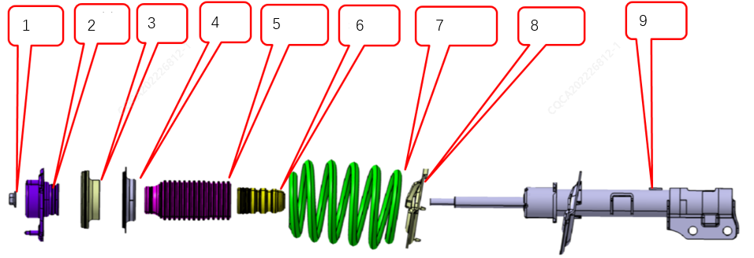
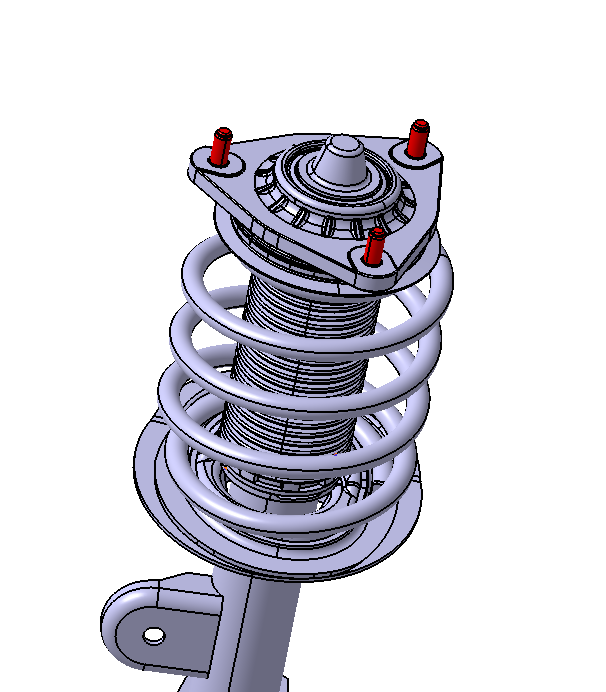
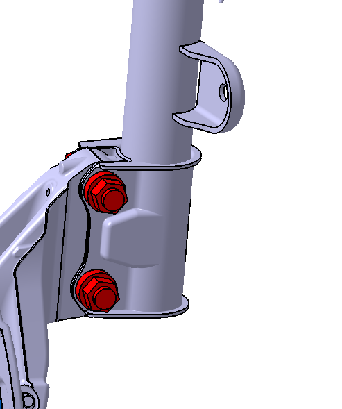

功能
支撑车辆，衰架路面振动和冲击，提供车轮控制。
工作原理
车辆在行驶过程中遇到冲击时，弹簧吸收其能量并以势能暂时存储，在冲击过后又将其能量以动能的形式释放，车身在弹簧上往复振动。减振器在弹簧往复运动过程中加上一定的阻尼力，来迅速衰减弹簧的振动。由于减振器的阻尼力作用，车辆的振动便迅速衰减。减振器将车身的振动动能转化为热能，被油液吸收再通过壳体散到大气中去。
产品结构
前支柱减振器由1.自锁螺母2.上安装座总成3.轴承总成4.弹簧上垫5.防尘罩6.缓冲块7.螺旋弹簧8.弹簧下垫9.减震器总成等组成。详细结构如图所示

1.支柱总成上端通过上安装座三颗螺栓与车身连接，螺母安装扭矩85±5N.m 。

2.支柱总成下端通过减振器U型支架与制动羊角通过螺栓、螺母连接，螺母安装扭矩250±20N.m。

产品故障及排查
首先进行前支柱外观检查，确认前支柱是否有漏油，具体的减振器漏油判定请参见 前支柱漏油检查 ， 减振器渗油是不会导致异响。只有出现严重漏油，减振器内部油液已经缺失大部分才会出现“咚咚”异响。
然后再检查前支柱上、下安装螺栓螺母是否有松动，如没有松动，再检查前支柱与周边零部件是否有干涉，再检查前支柱内部外围件是否有干涉摩擦，痕迹。如过还没有发现异常，可以采用ABA互换验证，确认是前支柱故障。